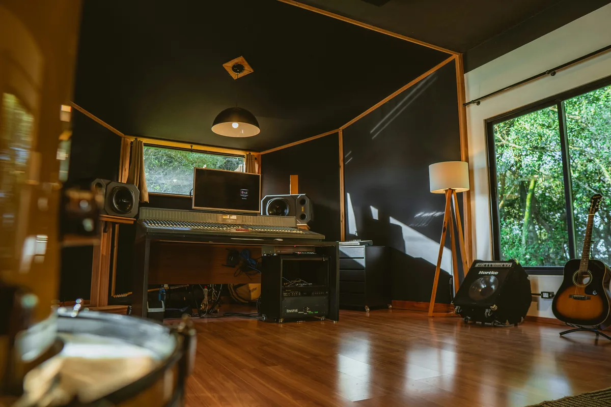
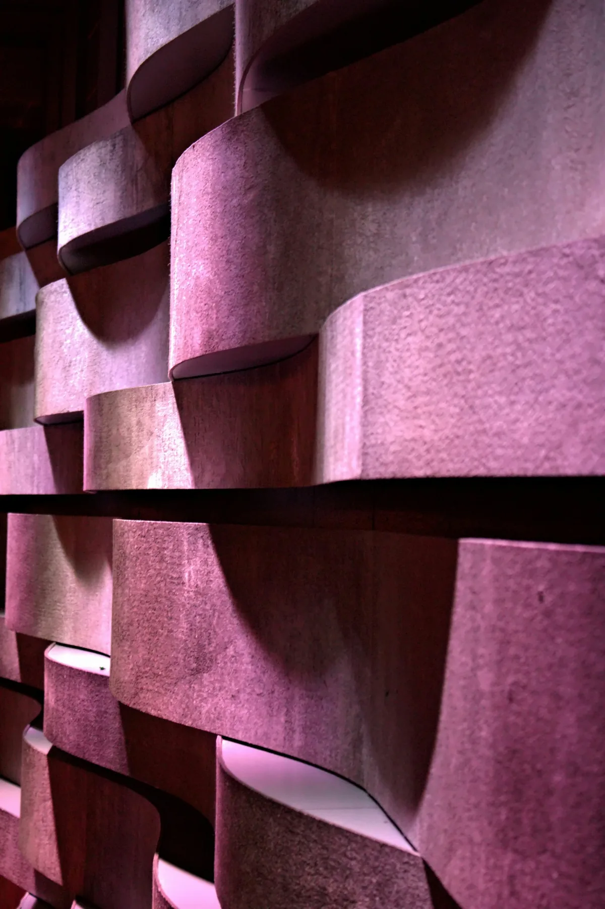

Dlaczego akustyka pokoju ma większe znaczenie niż sprzęt?
Możesz mieć najdroższy mikrofon na świecie, ale jeśli nagrywasz w pustym pokoju z gładkimi ścianami i parkietem - i tak wyjdzie błoto. Echo, pogłos i rezonanse ścian wchodzą do nagrania razem z dźwiękiem i nie da się ich później usunąć w miksie. To nie jest problem sprzętu, to problem akustyki. Dobra wiadomość: można go rozwiązać domowymi sposobami, często bez wydawania ani złotówki.
Co tak naprawdę psuje brzmienie w domowym pokoju?
Zanim zaczniesz przyklejać piankę do ścian, warto zrozumieć co konkretnie ci przeszkadza. Są dwa różne problemy, często mylone ze sobą:
- Pogłos i echo - dźwięk odbija się od twardych powierzchni i wraca do mikrofonu ułamki sekundy po oryginalnym sygnale. Efekt: nagranie brzmi jak w łazience lub klatce schodowej.
- Rezonanse basowe (standing waves) - fale niskich częstotliwości "stoją" w pomieszczeniu między równoległymi ścianami i powodują, że niektóre tony są sztucznie głośne lub cichsze niż powinny. Efekt: miks brzmi świetnie w studio, a na słuchawkach brakuje basu albo jest go za dużo.
Większość domowych sposobów radzi sobie dobrze z pierwszym problemem. Drugi jest trudniejszy i wymaga więcej wysiłku - ale też da się poprawić bez budowania profesjonalnych pułapek basowych.

Domowe sposoby, które naprawdę działają
1. Ubrania i szafa - najszybszy trik na nagranie wokalu
Jeśli musisz nagrać wokal dzisiaj i nie masz czasu na nic innego - wejdź do szafy pełnej ubrań. Materiały pochłaniają dźwięk zaskakująco skutecznie. Zawieś mikrofon między ubraniami, stań przodem do wieszaków i nagrywaj. Efekt jest porównywalny z tanim boksem wokalnym i dla większości zastosowań zupełnie wystarczający.
Jeśli szafa jest za mała - rozwiń koce lub grube zasłony wokół krzesła i nagraj "namiot". To samo działa z kocem rzuconym na głowę razem z mikrofonem. Śmiesznie wygląda, ale działa.
2. Kanapy, dywany i zasłony - zagospodaruj to co masz
Pusty pokój brzmi źle dlatego że nie ma w nim nic co pochłaniałoby dźwięk. Rozwiązanie jest proste: wnieść do niego jak najwięcej miękkiego. Gruby dywan na podłodze eliminuje odbicia od podłogi. Zasłony na oknach (im grubsze tym lepiej) tłumią odbicia od szyby. Sofa lub fotel pochłaniają średnie częstotliwości lepiej niż niejeden panel akustyczny.
Regały z książkami to osobna kategoria - rozpraszają dźwięk zamiast go pochłaniać, co też jest pożądane. Jeśli masz dużą biblioteczkę, ustaw ją na ścianie za monitorem - to klasyczne rozwiązanie nawet w profesjonalnych studiach.
3. Pianka akustyczna - kiedy warto kupić i jak jej używać
Pianka klinowa to najtańsze dedykowane rozwiązanie - zestaw 12 płytek 30x30 cm kosztuje około 50-80 zł. Ważne zastrzeżenie: pianka działa tylko na średnie i wysokie częstotliwości. Basu praktycznie nie tknie. Jeśli twój główny problem to "łazienkowe" echo przy nagrywaniu wokalu - pianka wystarczy. Jeśli problem to boom basowy przy miksie - pianka ci nie pomoże.
Gdzie przyklejać? Przede wszystkim na pierwszych punktach odbicia - to miejsca na bocznych ścianach, do których dociera dźwięk z monitorów zanim trafi do twoich uszu. Prosty test: posadź kogoś na swoim miejscu przy biurku, a sam chodź wzdłuż ściany trzymając lusterko. W miejscach, gdzie w lusterku widać monitor - tam są pierwsze punkty odbicia.

Wełna mineralna - tańszy i skuteczniejszy zamiennik pianki
Jeśli chcesz pójść o krok dalej niż pianka klinowa, warto zainteresować się wełną mineralną budowlaną (tą samą, której używa się do izolacji termicznej). Płyta wełny 5-10 cm grubości pochłania dźwięk znacznie szerzej niż pianka - sięgając w niski średni bas. Koszt jest podobny lub niższy niż gotowe panele akustyczne.
Jak zrobić panel DIY? Rama z łatwy drewnianych, w środek wełna mineralna, z przodu materiał przepuszczający powietrze (len, dzianina akustyczna). Jeden panel 60x120 cm można zrobić za około 40-60 zł w materiały. Efekt brzmieniowy jest lepszy niż pianka klinowa w tej samej cenie.
Uwaga: przy pracy z wełną mineralną używaj rękawiczek i maski - włókna są drażniące dla skóry i dróg oddechowych.

Ustawienie sprzętu ma znaczenie
Zanim cokolwiek przykleisz do ściany, sprawdź czy twoje monitory stoją poprawnie. To często robi większą różnicę niż jakakolwiek akustyka. Podstawowe zasady:
- Monitory powinny być ustawione w równoramiennym trójkącie z twoimi uszami - odległość monitor-monitor równa odległości monitor-słuchacz, zwykle około 1-1,5 metra.
- Tweeter (mała kopułka) na wysokości uszu. Jeśli stoją na biurku za nisko - postaw je na podstawkach lub blokach z pianki izolacyjnej.
- Odsuń monitory od ściany co najmniej 30-50 cm. Monitor przyklejony do ściany wzmacnia bas w sposób niekontrolowany.
- Nie miksuj siedząc w samym rogu pokoju - to najgorsze możliwe miejsce akustycznie, rogi zbierają rezonanse basowe ze wszystkich trzech płaszczyzn.
Kolejność działań - od czego zacząć?
- Dywan i zasłony - jeśli ich nie masz, zdobądź. Natychmiastowy efekt, zero kosztów jeśli już je masz.
- Sprawdź ustawienie monitorów - poprawna pozycja jest darmowa i często rozwiązuje połowę problemów.
- Do nagrań wokalu - szafa lub koc - zanim kupisz cokolwiek, sprawdź czy to wystarcza.
- Pierwsze punkty odbicia - pianka lub wełna - jeśli problemy zostały, zaatakuj boczne ściany w miejscach pierwszych odbić.
- Rogi i bass trappy - dopiero na końcu, jeśli bas jest nierówny i masz budżet na materiały DIY.
Czego nie robić
Kartony po jajkach - to jeden z najpopularniejszych mitów akustycznych. Kartony po jajkach nie pochłaniają dźwięku skutecznie, stanowią zagrożenie pożarowe i nie warto ich wieszać na ścianach. Strata czasu.
Cienka pianka na całej ścianie - pianka 2-3 cm praktycznie nie robi różnicy. Lepiej mieć mniej paneli, ale grubszych (co najmniej 5 cm).
Wyciszenie zamiast akustyki - izolacja akustyczna (żeby dźwięk nie przechodził przez ścianę) i akustyka wnętrza (jak dźwięk zachowuje się w środku) to dwa zupełnie różne zagadnienia. Wieszanie pianki nie sprawi, że sąsiedzi nie będą cię słyszeć.
Podsumowanie
Dobra akustyka domowego pokoju nie musi kosztować dużo. Zacznij od tego co masz - dywan, zasłony, sofa, książki na półce. Do nagrań wokalu szafa z ubraniami często wystarczy w zupełności. Jeśli chcesz pójść dalej - DIY panele z wełny mineralnej dają profesjonalne rezultaty za ułamek ceny gotowych rozwiązań. Kluczem jest kolejność: najpierw popraw to co darmowe, potem dokupuj to co potrzebne.